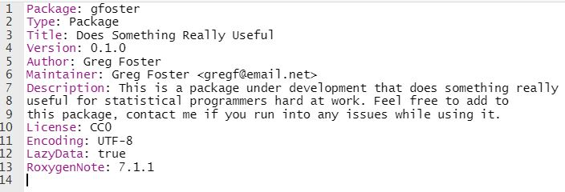
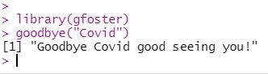

This week's assignment required the creation of a test package to learn the basic process of creating a package using
R-Studio, and to fill out the test package's description file.
The videos and readings posted on Canvas were very helpful, and the overall assignment went smoothly.
I created a test package named "gfoster", with a single function named "goodbye" that takes one parameter, x, and prints out the
message "Goodbye x, nice to see you!". The description file can be seen below. It is filled with gibberish for the sake of
the example, please don't think this is my attempt at a real package haha.

An example of the package being loaded and used in R is below.

As always, all of the files can be found on my Github page. The description file can
be located in the "gfoster" folder, and should have a commit comment of "module 10 update 3".